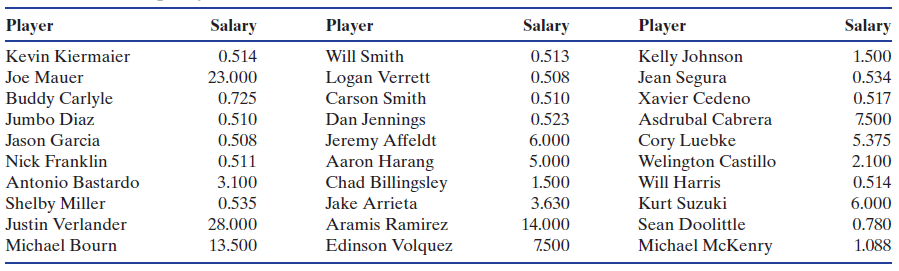
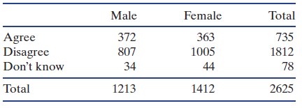

3.2 신뢰구간에 대한 이해
표본 통계량으로 모수를 추정할 수 있지만 표본에 따라 통계량이 변한다. 이러한 변동을 고려하여 최적의 추정치 하나보다는 그럴듯한 모수 값들의 범위를 제시하는 것이 더 좋을 수 있다. 최적 추정치 또는 그럴듯한 값들의 범위 중에서 어느 것을 사용하더라도 제일 먼저 할 일은 추정할 모수가 정확히 무엇인지 확인하는 것이다.
1장에서 변수는 범주형 변수와 양적 변수로 나뉘어지고, 2장에서는 요약 통계량과 그래프를 사용하여 변수 하나의 특성 또는 변수 둘 사이의 관계를 탐색하는 방법을 배웠다. 이들과 관련된 모수를 이 장에서 다룰 것이다. 아래 표는 상황 별로 모수와 표본 통계량을 요약한 것이다.
| 변수 | 추정 | 모수 | 통계량 |
|---|---|---|---|
| 범주형 변수 하나 | 비율 | \(p\) | \(\hat{p}\) |
| 양적 변수 하나 | 평균 | \(\mu\) | \(\bar{x}\) |
| 범주형 변수 두 개 | 비율 차이 | \(p_1 - p_2\) | \(\hat{p}_1 - \hat{p}_2\) |
| 범주형 변수 하나와 양적 변수 하나 | 평균 차이 | \(\mu_1 - \mu_2\) | \(\bar{x}_1 - \bar{x}_2\) |
| 양적 변수 둘 | 상관관계 | \(\rho\) | \(r\) |
구간 추정: 오차 한계
표본에서 계산한 표본 통계량의 값으로 모수를 추정한다. 하지만 통계량이 표본마다 변하므로 때로는 추정치 하나로 충분하지 않다. 따라서 추정치가 얼마나 정확한지 측정할 필요가 있다. 통계량이 표본에 따라 얼마나 변하는지 알면 추정치의 오차 한계(margin of error) 또는 오차 범위를 계산할 수 있다. 이를 이용하여 그럴듯한 모수 값들의 범위인 구간(interval)을 만들 수 있다.
예제 3.12. 미국의 한 조사 업체가 \(18\)세 이상의 \(1484\)명에게 TV가 필수품인지 물었다. \(42\%\)의 응답자가 필수품이라고 대답하였고 표집 오차 한계는 \(\pm 3\)%P이다. 이 정보를 가지고 \(18\)세 이상의 전체 미국인 중에서 TV가 필수품이라고 생각하는 사람의 비율에 대한 그럴듯한 값들의 구간을 제시하라.
풀이 (클릭하면 풀이가 보입니다)
모집단의 비율을 추정하는 것이므로 기호는 \(p\)를 사용한다. 표본에서 TV가 필수품이라고 생각하는 사람들의 비율 \(\hat{p} = 0.42\)이다. 오차 한계가 \(\pm 3\)%P라는 말은 아마도 전체 미국인 중에서 TV가 필수품이라고 생각하는 사람의 비율은 추정치의 \(3\%\)이내에 있음을 의미한다. 따라서 그럴듯한 모비율 값들의 구간은 \(0.42 \pm 0.03\)이다. \(0.42 - 0.03 = 0.39\) 이고 \(0.42 + 0.03 = 0.45\) 이다. 구간은 \(0.39\)에서 \(0.45\) 또는 \(39\%\)에서 \(45\%\)이다. 간단히 (\(0.39\), \(0.45\))로 표기하기도 한다.
\(18\)세 이상의 미국인은 약 \(2\)억\(4\)천만 명인데 조사는 단지 \(1484\)명만 하였다. 극히 일부를 조사하였는데 추정치가 모비율과 기껏해야 \(\pm 0.03\) 밖에 차이가 나지 않는다는 사실이 놀랍지 않은가? 이것이 바로 통계학의 힘이다.
예제 3.13. 선거 여론조사 결과 특정 후보를 지지하는 비율 \(\hat{p}\)은 \(0.54\)라고 하자. 실제 지지율 \(p\)는 \(\hat{p}\)과 얼마나 가까운지 알고 싶다. 다음 각각의 경우에 후보자의 당선을 얼마나 확신할 수 있는가를 논하라.
(1) 오차 한계가 \(0.02\)
(2) 오차 한계가 \(0.10\)
풀이 (클릭하면 풀이가 보입니다)
(1) 오차 한계가 \(0.02\)이면 그럴듯한 \(p\)값들의 구간은 \(0.54 \pm 0.02\) 이다. 실제 지지율은 \(0.52\)에서 \(0.56\) 사이에 있다. 그럴듯한 값들이 모두 \(0.5\)보다 크므로 후보자가 당선될 가능성이 상당히 높다고 확신할 수 있다.
(2) 오차 한계가 \(0.10\)이면 구간은 \(0.54 \pm 0.10\) 이다. 실제 지지율은 \(0.44\)에서 \(0.64\) 사이에 있다. \(0.5\)보다 작은 값들을 포함하므로 선거 결과에 대하여 확실하게 말할 수 없다.
확인문제 1. 다음 중 구간 추정에 대한 설명으로 옳지 않은 것은? (선택지를 눌러 채점)
1 구간 추정은 표본에서 계산한 통계량의 변동을 고려하여 모수를 추정하는 방법이다.
2 구간 추정은 정확한 모수를 제공한다.
3 구간 추정에서는 추정치의 오차 범위를 포함한 구간을 제공한다.
4 구간 추정을 통해 추정치의 정확성에 대한 신뢰 구간을 얻을 수 있다.
확인문제 2. 다음 중 오차 한계가 \(\pm 3\)%일 때, \(42\%\)의 응답자가 필수품이라고 대답한 경우 그럴듯한 모비율 값들의 구간은 무엇인가? (선택지를 눌러 채점)
1 (\(0.42\), \(0.45\))
2 (\(0.39\), \(0.45\))
3 (\(0.39\), \(0.42\))
4 (\(0.40\), \(0.45\))
확인문제 3. 다음 중 오차 한계에 대한 설명으로 옳지 않은 것은? (선택지를 눌러 채점)
1 오차 한계는 표본에서 추정한 값이 모집단 모수와 얼마나 차이가 날 수 있는지를 나타낸다.
2 오차 한계가 작을수록 표본의 정확도는 높다.
3 오차 한계는 구간 추정에서만 사용된다.
4 오차 한계는 표본 크기가 커질수록 커진다.
신뢰구간
모수라고 생각할만한 값들의 범위로 모수를 추정하는 것을 구간 추정이라고 한다. 표본 정보로 계산하는 이 구간을 신뢰구간(confidence interval)이라 부른다. 신뢰구간이 모수를 포함할 확률은 사전에 결정된다. 모수는 고정된 값이라 변하지 않지만 표본은 변하기 쉽다. 모든 표본의 신뢰구간이 모수를 포함하도록 하려면 구간을 넓게 해야 한다. 하지만 구간이 너무 넓으면 쓸모가 없다. 예를 들어보자. 후보자의 지지율을 구간 추정하고 싶다. 어떻게 하면 신뢰구간이 항상 모수를 포함할까? 간단히 (\(0\), \(1\))로 하면 된다. 후보자가 당선될 확률이 \(0\%\)에서 \(100\%\)이면 항상 모수를 포함한다. 맞는 말이지만 이런 정보가 유용한가?
신뢰구간이 넓으면 모수를 포함할 확률은 높지만 쓸모가 없다. 신뢰구간이 너무 좁아도 문제다. 모수를 포함할 확률이 작아서 신뢰할 수 없다. 그러면 신뢰구간을 어떻게 만들어야 할까? 일부 표본에서는 신뢰구간이 모수를 포함하지 못하더라도 대다수 표본에서 신뢰구간이 모수를 포함하면 된다.
대칭이고 종 모양인 분포에서 대략 \(95\%\)의 데이터는 중심에서 \(2\)배의 표준편차 거리 안에 있다고 2.3절에서 배웠다. 표본 통계량의 표집분포가 대칭이고 종 모양이라면 대략 \(95\%\)의 표본 통계량은 표집분포의 중심인 모수에서 \(2\)배의 표준오차를 벗어나지 않는다. 구간 \(\text{통계량} \pm 2 \times SE\)는 모든 표본 중 대략 \(95\%\)는 모수를 포함할 것이다. 여기서 SE는 표준오차(표집분포의 표준편차)이다.
우리가 표준오차를 추정할 수 있고 표집분포가 대략 대칭이고 종 모양이라면 이런 방식으로 근사적인 \(95\%\) 신뢰구간을 만든다.

예제 3.14. \(2015\)년 미국 메이저 리그 야구 전체 선수 중에서 무작위로 뽑은 \(30\)명의 연봉 자료가 위에 있다. 표본평균 \(\bar{x}=4.55\), 표준편차 \(s=6.81\)이다. 예제 3.7에서 표본 크기 \(n=30\)인 표본 평균의 표준오차는 \(0.99\)로 추정하였다.
(1) 표본 정보와 표준오차 추정치 \(0.99\)를 사용하여 전체 야구 선수의 평균 연봉에 대한 \(95\%\) 신뢰구간을 구하라. 최적 추정치와 오차한계는 무엇인가? 추정할 모수를 올바른 기호로 표현하라.
(2) 모수 \(\mu=4.215\)임을 알고 있다. 이 표본으로 만든 신뢰구간은 모수를 포함하는가?
(3) 표준편차 \(6.81\)은 표준오차 \(0.99\)와 매우 다르다. 이 둘의 차이점을 설명하라.
풀이 (클릭하면 풀이가 보입니다)
(1) 모집단은 \(2015\)년 메이저 리그의 모든 야구 선수이다. 모든 야구 선수의 평균 연봉은 \(\mu\)로 표기한다. \(\mu\)의 \(95\%\) 신뢰구간은
\[\begin{aligned} \text{통계량} \pm 2 \times SE &= \bar{x} \pm 2 \times SE \\ &= 4.55 \pm 2 \times 0.99 \\ &= 4.55 \pm 1.98 = (2.57, 6.53) \end{aligned}\]
야구 선수의 평균 연봉에 대한 \(95\%\)의 신뢰구간은 \(2.57\)에서 \(6.53\)이다. 최적 추정치는 \(4.55\)이고, 오차 한계는 \(1.98\)이다.
(2) 이 표본의 경우에는 모평균 \(4.215\)가 신뢰구간 (\(2.57\), \(6.53\)) 안에 포함된다.
(3) 표준편차 \(6.81\)은 표본에서 \(30\)개 연봉 데이터의 표준편차이다. 위 표를 보면 연봉 데이터는 상당히 넓은 범위에 퍼져 있다. 한 번에 \(30\)명의 연봉을 표본으로 뽑아 평균을 계산한다. 이것을 반복하여 얻은 표본 평균의 표준편차는 \(0.99\)이다. 이 평균값은 개별 연봉보다 훨씬 더 좁은 범위에 퍼져 있다.
오차 한계, 표준오차, 표본 표준편차는 모두 다른 개념이다. 따라서 이들을 정확하게 구분할줄 알아야 한다. 오차 한계는 신뢰구간을 구할 때 통계량에서 더하고 빼는 양이다. 표준오차는 같은 크기의 표본을 반복하여 뽑았을 때 표본 통계량의 표준편차이다. 표본 표준편차는 표본에서 개별 값에 대한 표준편차이다.
확인문제 1. 다음 중 신뢰구간에 대한 설명으로 옳지 않은 것은? (선택지를 눌러 채점)
1 신뢰구간은 모수를 포함할 확률이 사전에 결정된다.
2 신뢰구간은 추정치 하나보다는 범위를 제시하는 것이 더 유용할 수 있다.
3 신뢰구간이 너무 넓으면 그 정보는 유용하다.
4 신뢰구간이 너무 좁으면 그 정보는 신뢰할 수 없다.
확인문제 2. 다음 중 오차 한계에 대한 설명으로 옳은 것은? (선택지를 눌러 채점)
1 오차 한계는 표본에서 추정한 값이 모집단 모수와 얼마나 차이가 날 수 있는지를 나타낸다.
2 오차 한계는 표본 표준편차로 구할 수 있다.
3 오차 한계는 신뢰구간을 구할 때 모수의 값을 더하고 빼는 양이다.
4 오차 한계는 신뢰구간의 중심을 나타내는 값이다.
확인문제 3. 다음 표본 정보로 \(95\%\) 신뢰구간을 구할 때, 오차 한계는 얼마인가?
- 표본 평균: \(4.55\)
- 표준오차: \(0.99\) (선택지를 눌러 채점)
1 \(0.99\)
2 \(1.98\)
3 \(2.57\)
4 \(1.0\)
신뢰구간에서 신뢰는 무엇을 의미하는가?
3.1절에서 학사 학위를 가진 미국 성인의 비율은 \(0.275\)라고 하였다. 아래 앱에서 모비율은 \(0.275\), 표본 크기는 \(200\)으로 설정한다. 표본 추출을 \(1000\)번 반복하면 표준편차는 대략 \(0.03\)이다.
예제 3.15. 아래 \(3\)가지 표본 비율 모두 모집단에서 나올만한 값이다. 표집분포의 표준오차는 대략 \(0.03\)이다. \(95\%\) 신뢰구간을 만들고 모비율 \(0.275\)를 포함하는지 검사하라.
(1) \(\hat{p} = 0.26\)
(2) \(\hat{p} = 0.32\)
(3) \(\hat{p} = 0.20\)
풀이 (클릭하면 풀이가 보입니다)
표본 비율 \(\hat{p}\)이 모비율의 최적 추정치이다. 표집분포는 대칭이고 종 모양이므로 \(95\%\) 신뢰구간은 \(\hat{p} \pm 2 \cdot SE\)이다.
(1) \(\hat{p}\)이 \(0.26\)이면 구간은 \(0.26 \pm 2 \cdot 0.03 = (0.20, 0.32)\)이다. 표집분포 그래프를 보면 표본 비율 \(0.26\)은 중심에서 매우 가까운 곳에 있다. 신뢰구간 (\(0.20\), \(0.32\))은 모비율 \(0.275\)를 포함한다.
(2) \(\hat{p}\)이 \(0.32\)이면 구간은 \(0.32 \pm 2 \cdot 0.03 = (0.26, 0.38)\)이다. 표집분포 그래프를 보면 표본 비율 \(0.32\)는 중심에서 조금 멀지만 그렇다고 아주 먼 꼬리에 있지는 않다. 신뢰구간 (\(0.26\), \(0.38\))은 모비율 \(0.275\)를 포함한다.
(3) \(\hat{p}\)이 \(0.20\)이면 구간은 \(0.20 \pm 2 \cdot 0.03 = (0.14, 0.26)\)이다. 표집분포 그래프를 보면 표본 비율 \(0.20\)은 중심에서 가깝지 않은 왼쪽 꼬리에 있다. 표본 비율 \(0.20\)은 표집분포의 중심에서 \(2\)배의 표준오차 범위를 벗어났다. 신뢰구간 (\(0.14\), \(0.26\))은 모비율 \(0.275\)를 포함하지 않는다.
위 예제에서 신뢰구간 \(2\)개는 모수를 포함했지만 표본 비율 \(0.20\)에서 계산한 신뢰구간은 모수를 포함하지 않았다. \(95\%\) 신뢰구간을 반복하여 많이 만든다고 하자. 그러면 이들 중에서 약 \(95\%\)는 모수를 포함하겠지만 나머지 \(5\%\)는 모수를 포함하지 못할 것이다.
확인문제 1. 다음 중 \(95\%\) 신뢰구간에 대한 설명으로 옳은 것은? (선택지를 눌러 채점)
1 \(95\%\) 신뢰구간은 표본을 여러 번 추출했을 때 \(95\%\)의 신뢰구간이 모수를 포함한다고 할 수 있다.
2 신뢰구간은 모수를 정확하게 포함한다.
3 신뢰구간이 좁을수록 정확한 추정이 가능하다.
4 신뢰구간은 항상 모수를 포함하지 않는다.
확인문제 2. 다음 표본 비율에 대해 계산된 \(95\%\) 신뢰구간이 모비율 \(p=0.275\)를 포함하면 \(1\), 포함하지 못하면 \(2\)로 표기하시오.
표준오차 \(SE=0.03\)일 때, 신뢰구간을 구하시오.
(1) \(\hat{p} = 0.30\)
(2) \(\hat{p} = 0.28\)
(3) \(\hat{p} = 0.32\)
(1) \(1\) (2) \(1\) (3) \(1\)
확인문제 3. 신뢰구간을 구할 때, 표본 비율이 \(\hat{p} = 0.20\)일 때 신뢰구간은 다음과 같다. 이 신뢰구간이 모비율 \(p = 0.275\)를 포함하는지 확인하시오. (선택지를 눌러 채점)
표본 비율 \(\hat{p} = 0.20\), 표준오차 \(SE = 0.03\)
1 신뢰구간은 \((0.14, 0.26)\)이고 모비율 \(0.275\)를 포함한다.
2 신뢰구간은 \((0.14, 0.26)\)이고 모비율 \(0.275\)를 포함하지 않는다.
3 신뢰구간은 \((0.18, 0.22)\)이고 모비율 \(0.275\)를 포함한다.
4 신뢰구간은 \((0.17, 0.23)\)이고 모비율 \(0.275\)를 포함하지 않는다.
아래 앱에서 모비율 \(p=0.275\), 표본 크기 \(n=200\)으로 설정한다. 표본 추출 버튼을 클릭하여 표본을 추출하고 표본 비율을 계산한다. 표본 비율에서 \(2\)배의 표준오차 거리 안에 모비율이 있으면 파란색이고 밖에 있으면 빨간색이다.
표본을 뽑아 \(95\%\) 신뢰구간이 모비율을 포함하는지를 평가하는 모의실험을 많이 한다면, 중앙의 약 \(95\%\) 표본은 모비율을 포함하지만, 양쪽 꼬리의 약 \(5\%\) 표본은 모비율을 포함하지 못한다. 이 구간이 모수를 포함한다는 것을 \(95\%\) 신뢰할 수 있으므로 \(95\%\) 신뢰구간이라 부른다.
보통 우리는 표본 하나만 가지고 있으므로 실제 모수 값은 모른다. 모수를 모르므로 표본에서 만든 \(95\%\) 신뢰구간이 모수를 포함하는지도 모른다. 그러면 \(95\%\)는 무엇을 의미하는가? \(95\%\)는 모수가 구간 안에 있다는 확신의 정도를 나타낸다. \(95\%\)와 같은 수치를 신뢰 수준(confidence level)이라 부른다.
확인문제 1. \(95\%\) 신뢰구간을 만들 때, 표본에서 계산된 신뢰구간이 모수 값을 포함하는 확률은 무엇을 의미하는가? (선택지를 눌러 채점)
1 표본이 포함하는 모수의 정확한 값을 의미한다.
2 이 방법으로 구간을 여러 번 만들면, 그중 \(95\%\)가 모수를 포함한다
3 표본 비율이 \(95\%\) 정확하다는 의미이다.
4 표본의 정확도를 \(95\%\)로 확신한다는 의미이다.
확인문제 2. 다음 중 \(95\%\) 신뢰구간에 대한 설명으로 옳지 않은 것은? (선택지를 눌러 채점)
1 신뢰구간을 여러 번 만들 때 \(95\%\)가 모수를 포함한다.
2 모수가 신뢰구간 안에 있을 확률이 \(95\%\)이다.
3 \(95\%\) 신뢰구간은 표본을 여러 번 추출할 때 \(95\%\)가 모수를 포함한다고 할 수 있다.
4 \(95\%\) 신뢰구간을 통해 모수를 추정할 수 있다.
확인문제 3. 모비율 \(p = 0.275\)일 때, 표본 크기 \(n = 200\)을 설정하고 표본을 뽑아 \(95\%\) 신뢰구간이 모비율을 포함하는지 확인할 때, 신뢰구간을 계산하는 방법은 무엇인가? (선택지를 눌러 채점)
1 \(\hat{p} \pm 2 \times SE\)
2 \(\hat{p} \pm 1 \times SE\)
3 \(\hat{p} \pm 3 \times SE\)
4 \(\hat{p} \pm SE\)
예제 3.16. 체질량 지수(BMI)는 체중(kg)을 키(m)의 제곱으로 나눈 값이다. \(2010\)년 미국에 사는 성인 약 \(45\)만 명의 무작위 표본에서 체질량 지수의 표본 평균 \(\bar{x}=27.655\), 표준오차 \(SE=0.009\)이다.
(1) 미국 전체 성인의 평균 체질량 지수의 \(95\%\) 신뢰구간을 구하라. 이 경우에 신뢰구간은 무엇을 의미하는가?
(2) 체질량 지수가 \(25\) 이상이면 과체중으로 분류한다. 미국 전체 성인의 평균 체질량 지수는 과체중인가?
풀이 (클릭하면 풀이가 보입니다)
(1) 미국 전체 성인의 평균 체질량 지수를 \(\mu\)라고 표기하자. \(95\%\) 신뢰구간은 다음과 같다.
\[\begin{aligned} \text{통계량} \pm 2 \times SE &= \bar{x} \pm 2 \times SE \\ &= 27.655 \pm 2 \times 0.009 \\ &= 27.655 \pm 0.018 = (27.637, 27.673) \end{aligned}\]
\(\mu\)의 \(95\%\) 신뢰구간은 (\(27.637\), \(27.673\)) 이다. \(2010\)년 미국 성인 전체의 평균 체질량 지수는 \(27.637\)에서 \(27.673\) 사이에 있음을 \(95\%\) 확신한다.
(2) 신뢰구간 전체가 \(25\)보다 크므로 미국 전체 성인의 평균 체질량 지수는 과체중임을 확신한다.
위 예제에서 신뢰구간의 폭은 매우 좁은데 왜 그럴까? 표본의 크기(\(n=451,075\))가 매우 크기 때문이다. 표본의 크기가 클수록 표본 통계량의 변동은 작아지고 표준오차도 같이 작아진다.
예제 3.17. 지난 \(30\)일 동안 운동을 한 성인과 그렇지 않은 성인의 평균 체질량 지수 차이 \(\bar{x}_E - \bar{x}_N = -1.915\), 표준오차는 \(0.016\)이다. 전체 미국인 중에서 운동한 성인과 그렇지 않은 성인의 평균 체질량 지수 차이에 대한 \(95\%\) 신뢰구간을 구하라. 이 경우에 신뢰구간이 무엇을 의미하는지 설명하라. 운동 여부에 따라서 평균 체질량 지수는 차이가 없다고 할 수 있는가?
풀이 (클릭하면 풀이가 보입니다)
평균 차이 추정이므로 적절한 기호는 \(\mu_E - \mu_N\)이다. \(\mu_E - \mu_N\)은 \(2010\)년 미국인 중에서 지난 \(30\)일 동안 운동을 했던 모든 성인의 평균 체질량 지수에서 운동을 안했던 모든 성인의 평균 체질량 지수를 뺀 값이다. \(\mu_E - \mu_N\)에 대한 \(95\%\) 신뢰구간은
\[\begin{aligned} \text{통계량} \pm 2 \times SE &= (\bar{x}_E - \bar{x}_N) \pm 2 \times SE \\ &= -1.915 \pm 2 \times 0.016 \\ &= -1.915 \pm 0.032 = (-1.947, -1.883) \end{aligned}\]
운동을 했던 성인의 평균 체질량 지수가 운동을 하지 않았던 성인의 평균 체질량 지수보다 \(1.883\)에서 \(1.947\) 정도 작다는 것을 \(95\%\) 확신한다. 이 구간이 \(0\)을 포함하지 않으므로 운동 여부에 따라 평균 체질량 지수는 차이가 있음을 확신한다.
예제 3.18. 질병관리 본부는 체질량 지수가 \(30\) 이상이면 비만으로 분류한다. \(2010\)년 미국의 모든 성인의 비만율 \(p_{2010}\)의 \(95\%\) 신뢰구간은 (\(0.276\), \(0.278\))이다. \(2000\)년 조사에서 성인의 비만율 \(p_{2000}\)의 \(95\%\) 신뢰구간은 (\(0.195\), \(0.199\))이다.
(1) 두 개의 신뢰구간은 무엇을 의미하는가?
(2) \(2000\)년 조사의 표본 크기가 \(2010\)년보다 작다고 생각하는가? 이유는 무엇인가?
(3) 비율 차이 \(p_{2010} - p_{2000}\)에 대한 \(95\%\) 신뢰구간은 (\(0.049\), \(0.111\))이다. 이 구간은 무엇을 의미하는가?
풀이 (클릭하면 풀이가 보입니다)
(1) \(2010\)년 미국의 모든 성인 중 비만율은 \(0.276\)에서 \(0.278\) 사이라고 \(95\%\) 확신한다. 또한 \(2000\)년 미국의 모든 성인 중 비만율은 \(0.195\)에서 \(0.199\) 사이라고 \(95\%\) 확신한다.
(2) \(2000\)년 조사의 표본 크기가 \(2010\)년보다 더 작다. \(2000\)년의 신뢰구간의 오차한계가 \(2010\)년보다 더 크기 때문이다. 오차한계가 크면 표준오차가 크다는 뜻이고 이는 표본 크기가 작다는 것을 의미한다. 사실 \(2000\)년 조사에서 표본 크기는 \(184{,}450\)이었다.
(3) \(2000\)년에서 \(2010\)년 사이 \(10\)년 동안 비만율은 \(0.049\)에서 \(0.111\) 정도 증가했다고 \(95\%\) 확신한다.
확인문제 1. \(2010\)년 미국 성인의 평균 체질량 지수에 대한 \(95\%\) 신뢰구간을 구했을 때, 신뢰구간이 무엇을 의미하는가? (선택지를 눌러 채점)
1 표본 평균이 포함된 범위를 의미한다.
2 같은 방법으로 표본을 여러 번 뽑아 신뢰구간을 계산하면, 그중 약 \(95\%\)의 신뢰구간이 모수를 포함한다.
3 신뢰구간이 \(95\%\)의 표본을 포함한다는 의미이다.
4 표본 통계량이 \(95\%\) 신뢰를 갖고 있다는 의미이다.
확인문제 2. \(2010\)년 미국 성인의 평균 체질량 지수에 대한 \(95\%\) 신뢰구간이 (\(27.637\), \(27.673\))로 구해졌을 때, 신뢰구간의 해석은 무엇인가? (선택지를 눌러 채점)
1 \(95\%\) 신뢰구간이 평균 체질량 지수를 포함한다.
2 \(95\%\) 신뢰구간은 모수를 포함할 확률은 \(0\) 또는 \(1\)이다.
3 \(95\%\) 신뢰구간이 실제 모수 값을 나타낸다.
4 \(95\%\) 신뢰구간이 모수를 포함할 확률이 \(5\%\)이다.
확인문제 3. 운동을 한 성인과 그렇지 않은 성인의 평균 체질량 지수 차이에 대한 \(95\%\) 신뢰구간을 구했을 때, 이 구간이 \((-1.947, -1.883)\)로 나왔다면, 신뢰구간의 의미는 무엇인가? (선택지를 눌러 채점)
1 운동을 한 성인의 평균 체질량 지수가 운동을 하지 않은 성인의 평균 체질량 지수보다 \(0\)보다 클 확률이 \(95\%\)이다.
2 운동을 한 성인의 평균 체질량 지수가 운동을 하지 않은 성인의 평균 체질량 지수보다 \(1.883\)에서 \(1.947\) 정도 작다고 확신할 수 있다.
3 운동 여부에 따른 체질량 지수 차이가 \(0\)을 포함하고 있다고 확신할 수 있다.
4 운동 여부에 따라 체질량 지수 차이가 \(1.883\)에서 \(1.947\) 정도 증가했다고 확신할 수 있다.
신뢰구간에 대한 오해
오해 \(1\): \(95\%\) 신뢰구간은 모집단 전체 데이터 중 \(95\%\)를 포함한다.
이렇게 오해하기 쉽다. 앞의 예제에서 미국 성인 전체의 평균 체질량 지수의 \(95\%\) 신뢰구간은 (\(27.637\), \(27.673\)) 이다. 미국 전체 성인의 \(95\%\) 체질량 지수가 매우 좁은 구간인 (\(27.637\), \(27.673\)) 안에 있다면 누가 믿겠는가? 신뢰구간은 모수의 포함 여부에 관심이 있다. 모집단의 개별 데이터가 얼마나 포함되는지는 신뢰구간으로 말할 수 없다.
오해 \(2\): \(95\%\) 신뢰구간 안에 표본 평균이 포함된다는 것을 \(95\%\) 확신한다.
이것도 잘못된 표현이다. 올바른 표현은 “모평균이 \(95\%\) 신뢰구간 안에 있다는 것을 \(95\%\) 확신한다”이다. 표본 평균이 신뢰구간 안에 있다는 것은 \(100\%\) 확신할 수 있다. \(95\%\) 신뢰구간은 표본 평균에 \(2\)배의 표준오차를 더하고 빼서 만들기 때문에 표본 평균은 항상 신뢰구간 안에 포함된다. 신뢰구간은 표본 통계량이 아닌 모수에 대한 정보를 주는 것이다.
오해 \(3\): 모수가 특정의 \(95\%\) 신뢰구간 안에 포함될 확률은 \(0.95\)이다.
거짓이다. 표본에 따라 변하는 것은 통계량이지 모수가 아니다. 평균 체질량 지수의 신뢰구간 (\(27.637\), \(27.673\)) 안에 평균 체질량 지수의 참값은 포함되느냐 아니면 포함되지 않느냐 중에 하나이다. 실제 모평균 값이 변하여 \(95\%\)의 확률로 신뢰구간 안에 포함되는 것이 아니다. 따라서 구간 안에 모수의 포함 여부를 확률로 말하지 않고 “\(95\%\) 신뢰한다” 또는 “\(95\%\) 확신한다”라고 표현한다. 특정 신뢰구간의 성공 여부는 알 수 없다. 신뢰구간을 만드는 방식은 \(100\)번 시행하면 \(95\)번 정도는 제대로 작동하지만 \(5\)번 정도는 실패한다.
질문 3.2. 어느 통계학 수업에서 한 회사의 초콜릿 과자의 과자 하나당 평균 초콜릿 칩 수를 추정하려고 한다. 무작위 표본을 수집하여 과자 하나당 평균 초콜릿 칩 수의 \(95\%\) 신뢰구간을 구해보니 (\(18.6\), \(21.3\))이 나왔다. 다음 각각은 맞는 주장인가 아니면 틀린 주장인가? (선택지를 눌러 채점)
(1) 신뢰구간 (\(18.6\), \(21.3\))은 과자 하나당 초콜릿 칩 수의 실제 평균을 포함한다고 \(95\%\) 신뢰한다.
1 맞다
2 틀리다
(2) 각 과자에는 대략 \(18.6\)~\(21.3\)개의 초콜릿 칩이 들어 있다고 \(95\%\) 신뢰한다.
1 맞다
2 틀리다
(3) \(95\%\)의 과자에는 \(18.6\)~\(21.3\)개의 초콜릿 칩이 있다.
1 맞다
2 틀리다
확인문제 1. 다음 중 신뢰구간에 대한 잘못된 해석은? (선택지를 눌러 채점)
1 \(95\%\) 신뢰구간은 모집단의 모수가 포함될 것으로 기대되는 구간이다.
2 \(95\%\) 신뢰구간은 모집단 전체 데이터의 \(95\%\)를 포함한다.
3 신뢰구간은 표본 통계량이 아닌 모수에 대한 정보를 제공한다.
4 신뢰구간은 표본마다 달라질 수 있다.
확인문제 2. 다음 중 \(95\%\) 신뢰구간에 대한 올바른 해석은? (선택지를 눌러 채점)
1 특정한 신뢰구간이 모평균을 포함할 확률은 \(0.95\)이다.
2 신뢰구간은 표본을 여러 번 추출했을 때, \(95\%\)의 경우 모평균을 포함할 것으로 기대된다.
3 \(95\%\) 신뢰구간이 항상 모평균을 포함해야 한다.
4 신뢰구간을 만들면 표본 평균이 그 안에 포함될 확률은 \(95\%\)이다.
확인문제 3. 다음 중 신뢰구간과 관련하여 옳지 않은 설명은? (선택지를 눌러 채점)
1 \(95\%\) 신뢰구간이란 동일한 방법으로 신뢰구간을 여러 번 만들 경우, \(95\%\) 정도는 모수를 포함할 것으로 기대된다는 의미이다.
2 \(95\%\) 신뢰구간을 계산하면 표본 평균이 그 안에 포함될 확률은 \(95\%\)이다.
3 특정 신뢰구간이 모수를 포함하는지 여부는 \(0\) 또는 \(1\)이다.
4 신뢰구간의 성공 여부는 개별적으로 알 수 없고, 전체적인 과정에서 \(95\%\)가 포함될 것으로 기대된다.
실제 신뢰구간은 어떻게 만드는가?
우리는 지금까지 신뢰구간이 무엇을 의미하는지 또 표준오차를 알 때 신뢰구간을 만드는 방법을 배웠다. 우리가 가진 것은 표본 하나뿐인데 표준오차를 알 수 있겠는가? 신뢰수준이 \(95\%\)가 아닌 신뢰구간은 어떻게 만드는가? 표집분포를 만들 수 있다면 표본 통계량의 변동이 얼마인지 알 수 있다. 현실은 표본 하나만 있고 표집분포는 없다. 모수의 참값도 모르고 표집분포를 만들기 위하여 표본을 수천 번 반복해서 뽑을 여유도 없다. 지금까지 언급한 모든 것이 현실에서 가능하지 않다면 추정치의 정확도를 어떻게 평가할까?
표본 통계량의 변동을 알기 전에 모수의 참값을 알아야 하고 모집단에서 표본을 수천 번 뽑을 수 있어야 한다. 이 방법은 표본 통계량으로 모수를 추정할 때 도움을 주지 못한다. 현실에서 우리가 가진 표본은 표집분포를 구성하는 수많은 표본 중의 하나일 뿐이다. 무작위로 뽑은 표본이 표집분포의 어느 곳에 있을지 누가 아는가?
놀랍게도 표본 하나만 가지고도 표본 통계량의 변동을 알아낼 방법이 있다. 어떻게 이것이 가능한지 다음 절에서 배울 것이다.
확인문제 1. 다음 중 신뢰구간을 만들기 위해 필요한 조건이 아닌 것은 무엇인가? (선택지를 눌러 채점)
1 표본 통계량의 변동을 알 수 있는 방법이 있어야 한다.
2 표본을 수천 번 반복해서 뽑을 수 있어야 한다.
3 모수의 참값을 알아야 한다.
4 표본 하나만 가지고 신뢰구간을 만들 수 있다.
확인문제 2. 다음 중 실제 신뢰구간을 만들 수 있는 방법으로 가장 적합한 것은 무엇인가? (선택지를 눌러 채점)
1 표본 통계량의 변동을 추정하여 신뢰구간을 만들 수 있다.
2 모수의 참값을 알아야만 신뢰구간을 만들 수 있다.
3 표집분포를 만들어야만 신뢰구간을 만들 수 있다.
4 표본을 수천 번 반복해서 뽑은 후 신뢰구간을 계산할 수 있다.
확인문제 3. “표본 하나만 가지고도 표본 통계량의 변동을 알아낼 방법이 있다.” 이 문장의 의미는 무엇인가? (선택지를 눌러 채점)
1 표본 하나만으로도 신뢰구간을 정확하게 계산할 수 있다.
2 표본 하나에서 계산된 통계량의 변동을 추정할 수 있는 방법이 있다.
3 표본 하나만으로 표집분포를 만들 수 있다.
4 표본 하나만으로 모수의 정확한 값을 알 수 있다.
학습 내용 정리
다음 사항을 이해하거나 해결하는 능력이 있어야 한다.
- 추정할 모수와 모수의 최적 추정치로 사용할 표본 통계량은 무엇인지 알고 있다.
- 표본 통계량과 오차한계가 주어지면 신뢰구간을 만들 수 있다.
- 신뢰구간은 그럴듯한 모수 값들을 구간으로 표현한 것이다.
- 표본 통계량과 표준오차의 추정치로 신뢰구간을 만들 수 있다.
- 신뢰구간이 모수에 대하여 무엇을 말하는지 기술할 수 있다.
오차한계를 사용한 그럴듯한 모수 값의 범위
모수의 최적 추정치는 표본 통계량이다. 그럴듯한 모수 값의 범위는 “\(\text{통계량} \pm \text{오차한계}\)”이다. 오차한계(margin of error)는 모수의 추정치로서 표본 통계량의 정밀도이다.
신뢰구간
가능한 모든 표본으로 신뢰구간(confidence interval)을 만든다면 특정 비율의 신뢰구간만 모수를 포함한다. 모수가 포함되는 비율이 신뢰수준(confidence level)이다.
표준오차를 사용한 95% 신뢰구간
표준오차 SE를 추정할 수 있고 표집분포가 비교적 대칭이고 종 모양이라면 \(95\%\) 신뢰구간은 “\(\text{통계량} \pm 2 \times SE\)”이다.
신뢰수준 의미
구간 안에 모수가 포함됨을 얼마나 확신하는지를 숫자로 표현한 것이 신뢰수준(confidence level)이다. 예를 들면, \(95\%\) 신뢰구간에서 \(95\%\)의 의미는 이 구간이 모수를 포함한다는 것을 \(95\%\) 확신한다는 뜻이다.
확인문제 1. 다음 중 신뢰구간을 만들 때 오차한계의 역할에 대한 설명으로 옳은 것은 무엇인가? (선택지를 눌러 채점)
1 오차한계는 표본 통계량의 정확도를 나타내는 값이다.
2 오차한계는 모수의 추정치가 \(100\%\) 정확하다는 것을 보장한다.
3 오차한계는 표본 통계량의 변동을 계산하여 신뢰구간을 확정하는 데 사용된다.
4 오차한계는 신뢰구간의 범위를 확정짓지 않으며, 항상 \(0\)에 가까운 값을 가진다.
확인문제 2. \(95\%\) 신뢰구간에서 \(95\%\)의 의미는 무엇을 나타내는가? (선택지를 눌러 채점)
1 신뢰구간이 모수를 정확하게 포함한다는 것을 확신하는 비율이다.
2 신뢰구간이 표본을 정확히 포함한다는 것을 확신하는 비율이다.
3 신뢰구간이 모수에 대해 \(95\%\) 확신한다는 의미이다.
4 \(95\%\)의 신뢰구간이 포함된 모든 표본 통계량이 모수와 일치한다고 믿을 수 있다는 의미이다.
확인문제 3. 다음 중 표준오차(SE)를 사용하여 \(95\%\) 신뢰구간을 만드는 방법으로 옳은 것은 무엇인가? (선택지를 눌러 채점)
1 신뢰구간 = \(\text{통계량} \pm 1 \times SE\)
2 신뢰구간 = \(\text{통계량} \pm 2 \times SE\)
3 신뢰구간 = \(\text{통계량} \pm 3 \times SE\)
4 신뢰구간 = \(\text{통계량} \pm SE\)
과제 3.4.
청소년의 뇌는 성인이나 어린이의 뇌와는 매우 다르다는 것이 연구 결과로 속속 밝혀지고 있다. 청소년은 특히 공포와 관련된 기억을 성인이나 어린이와 비교할 때 잘 잊지 못한다고 한다. 한 연구에서 참가자는 첫 단계에서 공포와 연관된 특정 소리를 학습한다. 두 번째 단계에서 참가자는 첫 단계에서 들었던 소리를 공포와 관련 없이 듣는다. 소리와 관련된 공포를 얼마나 잊었는지 생리학적인 수치로 측정한다. 수치가 클수록 소리와 관련된 공포를 많이 잊은 것이다. 성인과 청소년 사이에 평균 점수 차이를 추정하려고 한다. 성인의 평균 점수는 0.225, 청소년의 평균 점수는 0.059이다. 추정치의 표준오차는 0.091이다.
(1) 추정할 모수에 대한 올바른 기호는?
1 \(\mu\)
2 \(\bar{x}\)
3 \(\mu_1-\mu_2\)
4 \(\bar{x}_1-\bar{x}_2\)
5 \(p_1-p_2\)
6 \(\hat{p}_1-\hat{p}_2\)
(2) 최적 추정치에 대한 올바른 기호는?
1 \(\mu\)
2 \(\bar{x}\)
3 \(\mu_1-\mu_2\)
4 \(\bar{x}_1-\bar{x}_2\)
5 \(p_1-p_2\)
6 \(\hat{p}_1-\hat{p}_2\)
(3) 올바른 최적 추정치 값은?
1 \(0.225\)
2 \(0.059\)
3 \(0.166\)
4 \(0.091\)
5 \(0.284\)
(4)-a 추정량에 대한 95% 신뢰구간의 하한은?
1 \(-0.016\)
2 \(0.073\)
3 \(0.164\)
4 \(0.346\)
5 \(0.348\)
6 \(0.437\)
(4)-b 추정량에 대한 95% 신뢰구간의 상한은?
1 \(-0.016\)
2 \(0.073\)
3 \(0.164\)
4 \(0.346\)
5 \(0.348\)
6 \(0.437\)
(5) 이 연구는 실험연구인가, 관측연구인가?
1 실험연구
2 관측연구
과제 3.5.

미국 성인 중에서 무작위로 2625명을 뽑아 사람마다 진실한 사랑은 오직 하나라는 것에 동의하냐고 물었다. 성별로 응답을 정리한 표는 위에 있다. 표본에서 질문에 동의한 남녀의 비율 차이에 대한 표준오차는 0.018이다.
(1)-a 동의한 남녀 비율 차이의 95% 신뢰구간 하한은? (소수 3자리)
1 \(-0.140\)
2 \(-0.041\)
3 \(0.014\)
4 \(0.041\)
5 \(0.058\)
6 \(0.086\)
7 \(0.140\)
8 \(0.257\)
9 \(0.307\)
(1)-b 동의한 남녀 비율 차이의 95% 신뢰구간 상한은?
1 \(-0.140\)
2 \(-0.041\)
3 \(0.014\)
4 \(0.041\)
5 \(0.058\)
6 \(0.086\)
7 \(0.140\)
8 \(0.257\)
9 \(0.307\)
(2) 이 신뢰구간은 무엇을 말하는가?
1 남녀별 차이가 없다
2 남자가 여자보다 동의 비율이 더 높다
3 여자가 남자보다 동의 비율이 더 높다
과제 3.6.
\(2016\)년 미국 대선에서 여론조사 기관은 후보자에 대한 지지율과 오차한계를 발표하였다. 여론조사 결과 발표 당시에 대선 투표가 있다면 무엇을 말할 수 있는지 다음 보기에서 골라라.
(1) A \(54\%\), B \(46\%\), 오차한계 \(\pm 5\%\) — 무엇을 말할 수 있는가?
1 후보자 A의 당선이 확실하다
2 후보자 B의 당선이 확실하다
3 누가 당선될지 확신할 수 없다
(2) A \(52\%\), B \(48\%\), 오차한계 \(\pm 1\%\) — 무엇을 말할 수 있는가?
1 후보자 A의 당선이 확실하다
2 후보자 B의 당선이 확실하다
3 누가 당선될지 확신할 수 없다
(3) A \(53\%\), B \(47\%\), 오차한계 \(\pm 2\%\) — 무엇을 말할 수 있는가?
1 후보자 A의 당선이 확실하다
2 후보자 B의 당선이 확실하다
3 누가 당선될지 확신할 수 없다
(4) A \(58\%\), B \(42\%\), 오차한계 \(\pm 10\%\) — 무엇을 말할 수 있는가?
1 후보자 A의 당선이 확실하다
2 후보자 B의 당선이 확실하다
3 누가 당선될지 확신할 수 없다
과제 3.7.
미국의 한 대학에서 무작위로 100명의 학생을 뽑아 분당 맥박수를 측정하였다. 평균 맥박수의 95% 신뢰구간은 (65.5, 71.8)이다. 이 신뢰구간에 대한 각각의 진술이 올바르면 T, 올바르지 않으면 F로 표기하라.
(1) 모든 학생의 분당 맥박수는 65.5~71.8 사이라고 95% 확신한다.
1 참(T)
2 거짓(F)
(2) 표본 100명 학생의 분당 평균 맥박수는 65.5~71.8 사이라고 95% 확신한다.
1 참(T)
2 거짓(F)
(3) 이 대학 전체 학생의 분당 평균 맥박수 신뢰구간이 (65.5, 71.8)임을 95% 확신한다.
1 참(T)
2 거짓(F)
(4) 이 대학에서 95% 학생의 분당 맥박수는 65.5~71.8 사이에 있다.
1 참(T)
2 거짓(F)
(5) 전체 미국 대학생의 분당 평균 맥박수는 65.5~71.8 사이라고 95% 확신한다.
1 참(T)
2 거짓(F)
(6) 이 대학 학생들의 평균 맥박수의 95%는 65.5~71.8 사이에 있다.
1 참(T)
2 거짓(F)
(7) 표본 100명 무작위 표본을 반복해 뽑으면 95%는 평균 맥박수가 65.5~71.8 사이일 것이다.
1 참(T)
2 거짓(F)